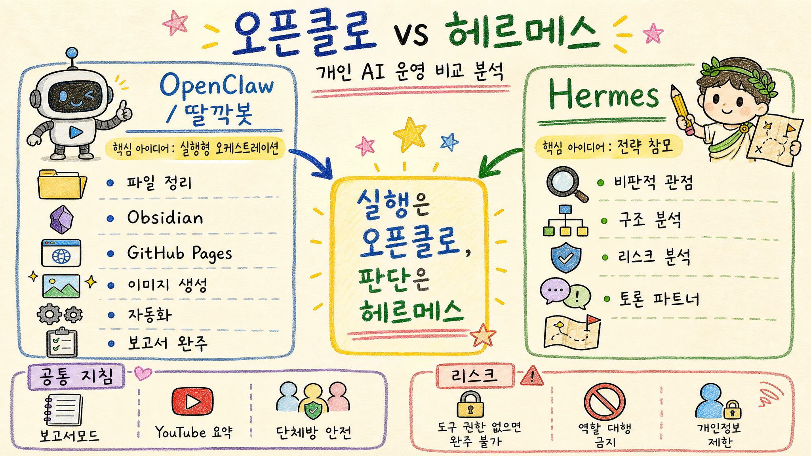
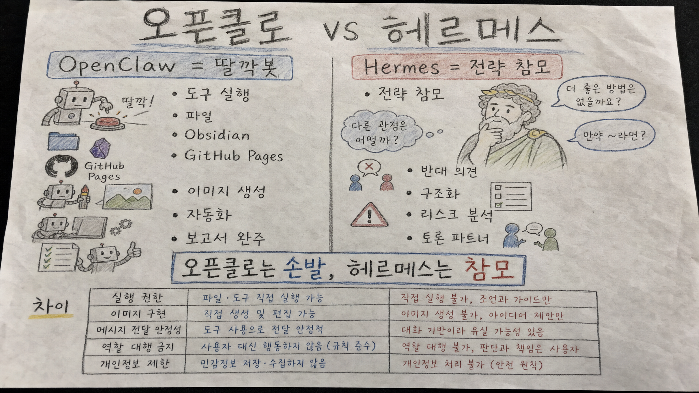
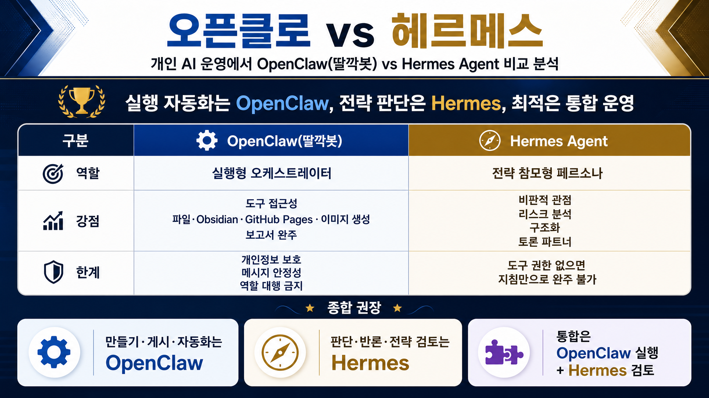

오픈클로 vs 헤르메스 비교 분석 보고서
한 줄 결론: 오픈클로는 실행·자동화·게시까지 끝내는 손발이고, 헤르메스는 판단·반론·리스크를 잡아주는 전략 참모다.
인포그래픽 1 · 보고서모드1 기본 손그림 스타일

인포그래픽 2 · 보고서모드2 실제 종이 스캔 느낌 손그림 스타일

인포그래픽 3 · 보고서모드3 깔끔한 고해상도 정보형 스타일

핵심 결론
- 실행 자동화와 산출물 완주는 OpenClaw/딸깍봇이 맡는 편이 좋다.
- 전략 판단, 반대 의견, 구조·리스크 검토는 Hermes가 강하다.
- 최적 구조는 OpenClaw가 만들고 게시하고, Hermes가 검토하고 흔드는 방식이다.
1. 역할 정의
| 구분 | OpenClaw / 딸깍봇 | Hermes Agent |
|---|---|---|
| 기본 역할 | 실행형 오케스트레이터. 요청을 받아 도구를 호출하고 파일·이미지·보고서·게시까지 이어간다. | 전략 참모형 페르소나. 판단을 구조화하고 반론, 리스크, 의사결정 포인트를 잡는다. |
| 운영 감각 | “해줘”에 강하다. 작업을 쪼개고 실제 결과물까지 만든다. | “이게 맞나?”에 강하다. 방향성, 허점, 대안, 기준을 따진다. |
| 가장 좋은 쓰임 | 보고서 작성, 이미지 생성, Obsidian/파일 정리, GitHub Pages 게시, 자동화 실행. | 기획 검토, 투자·사업·운영 판단의 반대 의견, 토론 파트너, 리스크 리뷰. |
2. OpenClaw / 딸깍봇의 강점
- 실행형 오케스트레이션: 여러 도구와 파일 작업을 묶어 끝까지 진행한다.
- 도구 접근성: 파일, Obsidian, GitHub Pages, 이미지 생성, 브라우저·CLI성 작업을 연결할 수 있다.
- 보고서모드 완주: 주제 정리 → 인포그래픽 생성 → HTML 보고서 → GitHub Pages 게시 → URL 확인까지 맡기기 좋다.
- 자동화: 반복 작업, 저장소 갱신, 일정한 형식의 산출물 생산에 강하다.
- 실무형 결과: 대화 답변에서 끝나지 않고 파일과 링크로 남긴다.
3. Hermes의 강점
- 전략 참모형 페르소나: 사용자가 운영 판단을 하도록 논점과 선택지를 정리한다.
- 비판적 관점: 낙관론만 반복하지 않고 허점, 반례, 실패 가능성을 짚는다.
- 구조/리스크 분석: “왜 이 판단이 위험한가”, “무엇을 먼저 확인해야 하는가”를 잘 나눈다.
- 토론 파트너: 딸깍봇이 실행 관점에서 본 것을 Hermes가 전략 관점에서 흔들 수 있다.
4. 공통 적용 지침
| 공통 규칙 | 의미 |
|---|---|
| 보고서모드 | 공개 가능한 주제는 조사·분석·인포그래픽·GitHub Pages 게시까지 진행한다. 1/2/3 통합 요청 시 파일과 URL은 하나만 만들고 인포그래픽 3개를 한 보고서에 넣는다. |
| YouTube 요약 | 공개 링크 기반으로 짧은 요약 형식을 따른다. 개인 자료나 비공개 메모리는 근거로 쓰지 않는다. |
| 단체방 안전 규칙 | 개인정보, 비공개 파일, Obsidian/Wiki/메모리 원문, 민감정보는 단체방에 노출하지 않는다. |
| 역할 대행 금지 | 딸깍봇은 Hermes 발언을 대신 쓰지 않고, Hermes도 딸깍봇의 실행 결과를 대신 완료 처리하지 않는다. |
5. 핵심 차이
| 항목 | OpenClaw / 딸깍봇 | Hermes |
|---|---|---|
| 실행 도구 권한 | 도구 호출과 파일 작업을 직접 수행할 수 있어 실제 산출물을 만든다. | 도구 권한이 없거나 제한되면 지침이 있어도 실제 완주는 어렵다. |
| 보고서 완주 능력 | 보고서 파일, 이미지 3개, GitHub Pages URL 확인까지 이어가기 적합하다. | 보고서의 논리·리스크 검토는 강하지만 게시 실행은 권한에 좌우된다. |
| 이미지 생성 구현 | image_generate 같은 도구 접근이 있으면 직접 생성·삽입 가능하다. | 동일 지침이 있어도 실제 이미지 생성 도구가 없으면 대체 텍스트에 그칠 수 있다. |
| 메시지 전달 안정성 | 실행 결과와 완료 알림을 관리해야 한다. 긴 작업에서는 원 요청 추적이 중요하다. | 토론·분석 메시지는 안정적일 수 있으나, 외부 게시 완료 보장은 별도 실행 체계가 필요하다. |
| 역할 대행 | Hermes의 최종 브리핑을 대신 쓰면 안 된다. | 딸깍봇의 도구 실행 완료를 대신 선언하면 안 된다. |
6. 어떤 상황에서 무엇을 쓰면 좋은가
| 상황 | 추천 | 이유 |
|---|---|---|
| 블로그/보고서/인포그래픽/게시까지 필요 | OpenClaw 우선 | 파일·이미지·GitHub Pages까지 실행할 수 있기 때문. |
| 운영 전략을 정해야 함 | Hermes 우선 | 기준, 반론, 리스크, 선택지를 잡는 데 강하기 때문. |
| 중요한 의사결정 | OpenClaw + Hermes | OpenClaw가 자료와 초안을 만들고 Hermes가 허점을 검토하는 조합이 좋다. |
| 단체방 공개 대응 | 둘 다 안전 규칙 우선 | 개인정보·비공개 자료 노출 위험이 최우선 리스크다. |
7. 통합 운영 구조 추천
- OpenClaw가 실행 담당: 자료 정리, 파일 생성, 이미지 생성, GitHub Pages 게시, 자동화.
- Hermes가 검토 담당: 결론의 과장 여부, 빠진 리스크, 반대 논리, 운영 기준 확인.
- 최종 산출은 OpenClaw가 마감: Hermes 검토를 반영한 뒤 하나의 보고서·하나의 URL로 정리.
- 단체방에서는 공개 정보만: 개인 파일명, 경로, 메모리, 설정, 토큰, 민감정보는 출력하지 않는다.
8. 리스크와 한계
- 도구 권한 리스크: Hermes에 보고서모드 지침이 있어도 실제 도구 권한이 없으면 이미지 생성·파일 저장·GitHub Pages 게시를 완주할 수 없다.
- 역할 대행 리스크: 봇끼리 서로의 발언을 대신 쓰면 토론의 의미와 책임 경계가 흐려진다.
- 단체방 개인정보 제한: 공개 채널에서는 개인 파일, 메모리, 민감한 운영 정보, 비공개 맥락을 노출하면 안 된다.
- 완료 알림 리스크: 긴 작업은 결과물만 생기고 사용자 알림이 누락될 수 있어 원 요청 추적과 독립 완료 알림이 필요하다.
최종 판단
주인님 관점에서 둘 중 하나를 고르는 문제가 아니라 역할을 분리해 함께 쓰는 문제다. OpenClaw는 실제로 만들고 움직이는 실행 엔진이고, Hermes는 판단을 더 날카롭게 만드는 전략 참모다. 보고서모드처럼 결과물이 필요한 작업은 OpenClaw가 주도하고, 중요한 결론이나 운영 정책은 Hermes가 검토하는 구조가 가장 실용적이다.
이 보고서는 공개 가능한 일반 운영 맥락과 현재 요청에서 제공된 기준만 바탕으로 작성했습니다. 비공개 메모리, 개인 파일 원문, secret/config/token 값은 포함하지 않았습니다.
Jeremy's Insight by 🤖 딸깍봇 https://blog.naver.com/jeremylee0213